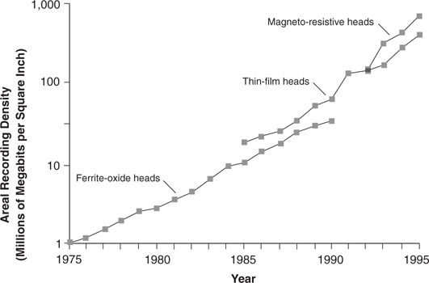
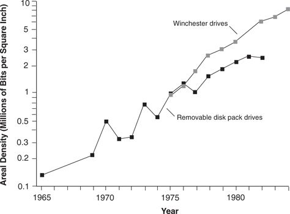
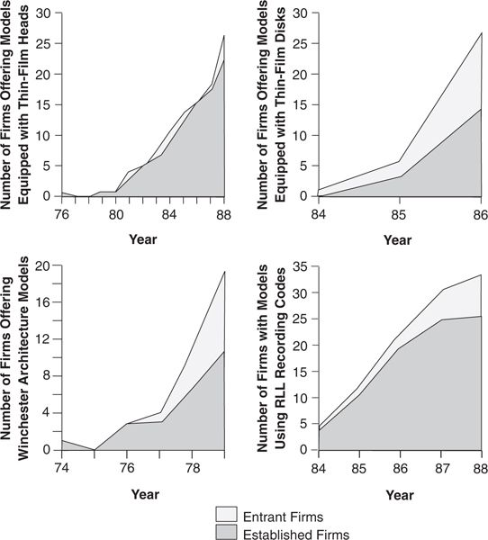

In the history of the disk drive industry, most technology changes have sustained or reinforced established trajectories of product performance improvement. Figure 1.4, which compares the average recording density of drives that employed successive generations of head and disk technologies, maps an example of this. The first curve plots the density of drives that used conventional particulate oxide disk technology and ferrite head technology; the second charts the average density of drives that used new-technology thin-film heads and disks; the third marks the improvements in density achievable with the latest head technology, magneto-resistive heads. 5
The way such new technologies as these emerge to surpass the performance of the old resembles a series of intersecting technology S-curves. 6 Movement along a given S-curve is generally the result of incremental improvements within an existing technological approach, whereas jumping onto the next technology curve implies adopting a radically new technology. In the cases measured in Figure 1.4, incremental advances, such as grinding the ferrite heads to finer, more precise dimensions and using smaller and more finely dispersed oxide particles on the disk’s surface, led to the improvements in density from 1 to 20 megabits per square inch (Mbpsi) between 1976 and 1989. As S-curve theory would predict, the improvement in recording density obtainable with ferrite/ oxide technology began to level off toward the end of the period, suggesting a maturing technology. The thin-film head and disk technologies’ effect on the industry sustained performance improvement at its historical rate. Thin-film heads were barely established in the early 1990s, when even more advanced magneto-resistive head technology emerged. The impact of magneto-resistive technology sustained, or even accelerated, the rate of performance improvement.
Figure 1.4 Impact of New Read-Write Head Technologies in Sustaining the Trajectory of Improvement in Recording Density

Source: Data are from various issues of Disk/Trend Report.
Figure 1.5 describes a sustaining technological change of a very different character: an innovation in product architecture, in which the 14-inch Winchester drive is substituted for removable disk packs, which had been the dominant design between 1962 and 1978. Just as in the thin-film for ferrite/oxide substitution, the impact of Winchester technology sustained the historically established rate of performance improvement. Similar graphs could be constructed for most other technological innovations in the industry, such as embedded servo systems, RLL and PRML recording codes, higher RPM motors, and embedded interfaces. Some of these were straightforward technology improvements; others were radical departures. But all had a similar impact on the industry: They helped manufacturers to sustain the rate of historical performance improvement that their customers had come to expect. 7
In literally every case of sustaining technology change in the disk drive industry, established firms led in development and commercialization. The emergence of new disk and head technologies illustrates this.
In the 1970s, some manufacturers sensed that they were reaching the limit on the number of bits of information they could pack onto oxide disks. In response, disk drive manufacturers began studying ways of applying super-thin films of magnetic metal on aluminum to sustain the historical rate of improvements in recording density. The use of thin-film coatings was then highly developed in the integrated circuit industry, but its application to magnetic disks still presented substantial challenges. Experts estimate that the pioneers of thin-film disk technology—IBM, Control Data, Digital Equipment, Storage Technology, and Ampex—each took more than eight years and spent more than $50 million in that effort. Between 1984 and 1986, about two-thirds of the producers active in 1984 introduced drives with thin-film disks. The overwhelming majority of these were established industry incumbents. Only a few entrant firms attempted to use thin-film disks in their initial products, and most of those folded shortly after entry.
Figure 1.5 Sustaining Impact of the Winchester Architecture on the Recording Density of 14-inch Disk Drives

Source: Data are from various issues of Disk/Trend Report.
The same pattern was apparent in the emergence of thin-film heads. Manufacturers of ferrite heads saw as early as 1965 the approaching limit to improvements in this technology; by 1981 many believed that the limits of precision would soon be reached. Researchers turned to thin-film technology, produced by sputtering thin films of metal on the recording head and then using photolithography to etch much finer electromagnets than could be attained with ferrite technology. Again, this proved extraordinarily difficult. Burroughs in 1976, IBM in 1979, and other established firms first successfully incorporated thin-film heads in disk drives. In the period between 1982 and 1986, during which some sixty firms entered the rigid disk drive industry, only four (all commercial failures) attempted to do so using thin-film heads in their initial products as a source of performance advantage. All other entrant firms—even aggressively performance-oriented firms such as Maxtor and Conner Peripherals—found it preferable to learn their way using conventional ferrite heads first, before tackling thin-film technology.
As was the case with thin-film disks, the introduction of thin-film heads entailed the sort of sustained investment that only established firms could handle. IBM and its rivals each spent more than $100 million developing thin-film heads. The pattern was repeated in the next-generation magneto-resistive head technology: The industry’s largest firms—IBM, Seagate, and Quantum—led the race.
The established firms were the leading innovators not just in developing risky, complex, and expensive component technologies such as thin-film heads and disks, but in literally every other one of the sustaining innovations in the industry’s history. Even in relatively simple innovations, such as RLL recording codes (which took the industry from double-to triple-density disks), established firms were the successful pioneers, and entrant firms were the technology followers. This was also true for those architectural innovations—for example, 14-inch and 2.5-inch Winchester drives— whose impact was to sustain established improvement trajectories. Established firms beat out the entrants.
Figure 1.6 summarizes this pattern of technology leadership among established and entrant firms offering products based on new sustaining technologies during the years when those technologies were emerging. The pattern is stunningly consistent. Whether the technology was radical or incremental, expensive or cheap, software or hardware, component or architecture, competence-enhancing or competence-destroying, the pattern was the same. When faced with sustaining technology change that gave existing customers something more and better in what they wanted, the leading practitioners of the prior technology led the industry in the development and adoption of the new. Clearly, the leaders in this industry did not fail because they became passive, arrogant, or risk-averse or because they couldn’t keep up with the stunning rate of technological change. My technology mudslide hypothesis wasn’t correct.
Figure 1.6 Leadership of Established Firms in Sustaining Technologies

Source: Data are from various issues of Disk/Trend Report.